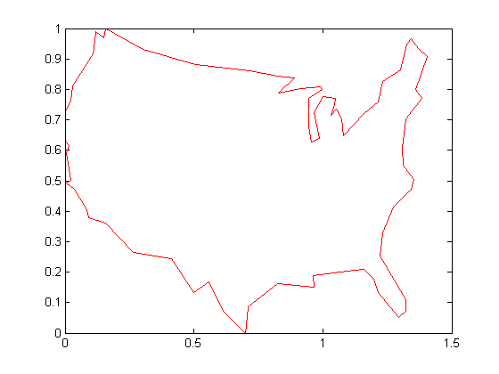
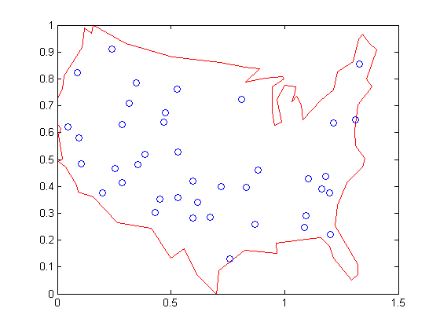
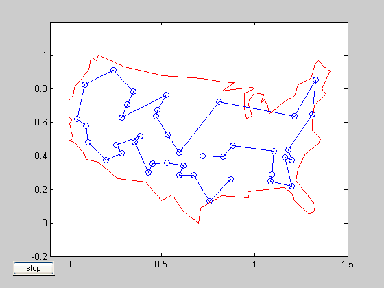

This is a demonstration of how to use the genetic algorithm to minimize a function using a custom data type. The genetic algorithm is customized to solve the traveling salesman problem.
The traveling salesman problem is an optimization problem where there is a finite number of cities, and the cost of travel between each city is known. The goal is to find an ordered set of all the cities for the salesman to visit such that the cost is minimized. To solve the traveling salesman problem, we need a list of city locations and distances, or cost, between each of them.
Our salesman is visiting cities in the United States. The file usborder.mat contains a map of the United States in the variables x and y, and a geometrically simplified version of the same map in the variables xx and yy.
load('usborder.mat','x','y','xx','yy'); plot(x,y,'Color','red'); hold on;
We will generate random locations of cities inside the border of the United States. We can use the INSIDE function to make sure that all the cities are inside or very close to the US boundary. The INSIDE function requires the input to be of complex data type, hence we will form the US border in imaginary coordinates.
cities = 40; complex_coord = xx+i*yy; X_coord = []; Y_coord = []; n=0; while n<cities, a=rand*1.5+i*rand; if inside(a,complex_coord), X_coord=[X_coord; real(a)]; Y_coord=[Y_coord; imag(a)]; n=n+1; end; end; locations=[X_coord Y_coord]; plot(locations(:,1),locations(:,2),'bo');
Blue circles represent the locations of the cities where the salesman needs to travel and deliver or pickup goods. Given the list of city locations, we can calculate the distance matrix for all the cities.
distances = zeros(cities); for count1=1:cities, for count2=1:count1, x1 = locations(count1,1); y1 = locations(count1,2); x2 = locations(count2,1); y2 = locations(count2,2); distances(count1,count2)=sqrt((x1-x2)^2+(y1-y2)^2); distances(count2,count1)=distances(count1,count2); end; end;
By default, the genetic algorithm solver solves optimization problems based on double and binary string data types. The functions for creation, crossover, and mutation assume the population is a matrix of type double, or logical in the case of binary strings. The genetic algorithm solver can also work on optimization problems involving arbitrary data types. You can use any data structure you like for your population. For example, a custom data type can be specified using a MATLAB cell array. In order to use GA with a population of type cell array you must provide a creation function, a crossover function, and a mutation function that will work on your data type, e.g., a cell array.
This section demonstrates how to create and register the three required functions. An individual in the population for the traveling salesman problem is an ordered set, and so the population can easily be represented using a cell array. The custom creation function for the traveling salesman problem will create a cell array, say P, where each element represents an ordered set of cities as a permutation vector. That is, the salesman will travel in the order specified in P{i}. The creation function will return a cell array of size PopulationSize.
type create_permutations.m
function pop = create_permutations(NVARS,FitnessFcn,options)
% This function creates a population of permutations
% POP = CREATE_PERMUTATION(NVARS,FITNESSFCN,OPTIONS) creates a population
% of permutations POP each with a length of NVARS.
%
% The arguments to the function are
% NVARS: Number of variables
% FITNESSFCN: Fitness function
% OPTIONS: Options structure used by the GA
% Copyright 2004 The MathWorks, Inc.
% $Revision: 1.1.4.1 $ $Date: 2004/03/26 13:26:06 $
totalPopulationSize = sum(options.PopulationSize);
n = NVARS;
pop = cell(totalPopulationSize,1);
for i = 1:totalPopulationSize
pop{i} = randperm(n);
end
The custom crossover function takes a cell array, the population, and returns a cell array, the children that result from the crossover.
type crossover_permutation.m
function xoverKids = crossover_permutation(parents,options,NVARS, ...
FitnessFcn,thisScore,thisPopulation)
% CROSSOVER_PERMUTATION Custom crossover function for traveling salesman.
% XOVERKIDS = CROSSOVER_PERMUTATION(PARENTS,OPTIONS,NVARS, ...
% FITNESSFCN,THISSCORE,THISPOPULATION) crossovers PARENTS to produce
% the children XOVERKIDS.
%
% The arguments to the function are
% PARENTS: Parents chosen by the selection function
% OPTIONS: Options structure created from GAOPTIMSET
% NVARS: Number of variables
% FITNESSFCN: Fitness function
% STATE: State structure used by the GA solver
% THISSCORE: Vector of scores of the current population
% THISPOPULATION: Matrix of individuals in the current population
% Copyright 2004 The MathWorks, Inc.
% $Revision: 1.1.4.1 $ $Date: 2004/03/26 13:26:06 $
nKids = length(parents)/2;
xoverKids = cell(nKids,1); % Normally zeros(nKids,NVARS);
index = 1;
for i=1:nKids
% here is where the special knowledge that the population is a cell
% array is used. Normally, this would be thisPopulation(parents(index),:);
parent = thisPopulation{parents(index)};
index = index + 2;
% Flip a section of parent1.
p1 = ceil((length(parent) -1) * rand);
p2 = p1 + ceil((length(parent) - p1- 1) * rand);
child = parent;
child(p1:p2) = fliplr(child(p1:p2));
xoverKids{i} = child; % Normally, xoverKids(i,:);
end
The custom mutation function takes an individual, which is an ordered set of cities, and returns a mutated ordered set.
type mutate_permutation.m
function mutationChildren = mutate_permutation(parents ,options,NVARS, ...
FitnessFcn, state, thisScore,thisPopulation,mutationRate)
% MUTATE_PERMUTATION Custom mutation function for traveling salesman.
% MUTATIONCHILDREN = MUTATE_PERMUTATION(PARENTS,OPTIONS,NVARS, ...
% FITNESSFCN,STATE,THISSCORE,THISPOPULATION,MUTATIONRATE) mutate the
% PARENTS to produce mutated children MUTATIONCHILDREN.
%
% The arguments to the function are
% PARENTS: Parents chosen by the selection function
% OPTIONS: Options structure created from GAOPTIMSET
% NVARS: Number of variables
% FITNESSFCN: Fitness function
% STATE: State structure used by the GA solver
% THISSCORE: Vector of scores of the current population
% THISPOPULATION: Matrix of individuals in the current population
% MUTATIONRATE: Rate of mutation
% Copyright 2004 The MathWorks, Inc.
% $Revision: 1.1.4.1 $ $Date: 2004/03/26 13:26:06 $
% Here we swap two elements of the permutation
mutationChildren = cell(length(parents),1);% Normally zeros(length(parents),NVARS);
for i=1:length(parents)
parent = thisPopulation{parents(i)}; % Normally thisPopulation(parents(i),:)
p = ceil(length(parent) * rand(1,2));
child = parent;
child(p(1)) = parent(p(2));
child(p(2)) = parent(p(1));
mutationChildren{i} = child; % Normally mutationChildren(i,:)
end
We also need a fitness function for the traveling salesman problem. The fitness of an individual is the total distance traveled for an ordered set of cities. The fitness function also needs the distance matrix to calculate the total distance.
type traveling_salesman_fitness.m
function scores = traveling_salesman_fitness(x,distances)
% A custom fitness function.
% SCORES = TRAVELING_SALESMAN_FITNESS(X,DISTANCES) Calculate the fitness
% of an individual. The fitness is the total distance traveled for an
% ordered set of cities in X. DISTANCE(A,B) is the distance from the city
% A to the city B.
% Copyright 2004 The MathWorks, Inc.
% $Revision: 1.1.4.1 $ $Date: 2004/03/26 13:26:06 $
scores = zeros(size(x,1),1);
for j = 1:size(x,1)
% here is where the special knowledge that the population is a cell
% array is used. Normally, this would be pop(j,:);
p = x{j};
f = distances(p(end),p(1));
for i = 2:length(p)
f = f + distances(p(i-1),p(i));
end
scores(j) = f;
end
GA will call our fitness function with just one argument 'x', but our fitness function has two arguments: x, distances. We can use an anonymous function to capture the values of the additional argument, the distances matrix. We create a function handle 'FitnessFcn' to an anonymous function that takes one input 'x', but calls 'traveling_salesman_fitness' with x, and distances. The variable, distances has a value when the function handle 'FitnessFcn' is created, so these values are captured by the anonymous function.
%distances defined earlier
FitnessFcn = @(x) traveling_salesman_fitness(x,distances);
We can add a custom plot function to plot the location of the cities and the current best route. A red circle represents a city and the blue lines represent a valid path between two cities.
type traveling_salesman_plot.m
function state = traveling_salesman_plot(options,state,flag,locations)
% TRAVELING_SALESMAN_PLOT Custom plot function for trveling salesman.
% STATE = TRAVELING_SALESMAN_PLOT(OPTIONS,STATE,FLAG,LOCATIONS) Plot city
% LOCATIONS and connecting route between them. This function is specific
% to the traveling salesman problem.
% Copyright 2004 The MathWorks, Inc.
% $Revision: 1.1.4.1 $ $Date: 2004/03/26 13:26:06 $
persistent x y xx yy
if strcmpi(flag,'init')
load('usborder.mat','x','y','xx','yy');
end
plot(x,y,'Color','red');
axis([-0.1 1.5 -0.2 1.2]);
hold on;
[unused,i] = min(state.Score);
genotype = state.Population{i};
plot(locations(:,1),locations(:,2),'bo');
plot(locations(genotype,1),locations(genotype,2));
hold off
Once again we will use an anonymous function to create a function handle to an anonymous function which calls 'traveling_salesman_plot' with the additional argument 'locations'.
%locations defined earlier my_plot = @(options,state,flag) traveling_salesman_plot(options, ... state,flag,locations);
First, we will create an options structure to indicate a custom data type and the population range.
options = gaoptimset('PopulationType', 'custom','PopInitRange', ... [1;cities]);
We choose the custom creation, crossover, mutation, and plot functions that we have created, as well as setting some stopping conditions.
options = gaoptimset(options,'CreationFcn',@create_permutations, ... 'CrossoverFcn',@crossover_permutation, ... 'MutationFcn',@mutate_permutation, ... 'PlotFcn', my_plot, ... 'Generations',500,'PopulationSize',60, ... 'StallGenLimit',200,'Vectorized','on');
Finally, we call the genetic algorithm with our problem information.
numberOfVariables = cities; [x,fval,reason,output] = ga(FitnessFcn,numberOfVariables,options)
Optimization terminated: maximum number of generations exceeded.
x =
[1x40 double]
fval =
5.6252
reason =
Optimization terminated: maximum number of generations exceeded.
output =
randstate: [35x1 double]
randnstate: [2x1 double]
generations: 500
funccount: 30000
message: [1x64 char]
The plot shows the location of the cities in blue circles as well as the path found by the genetic algorithm that the salesman will travel. The salesman can start at either end of the route and at the end, return to the starting city to get back home.